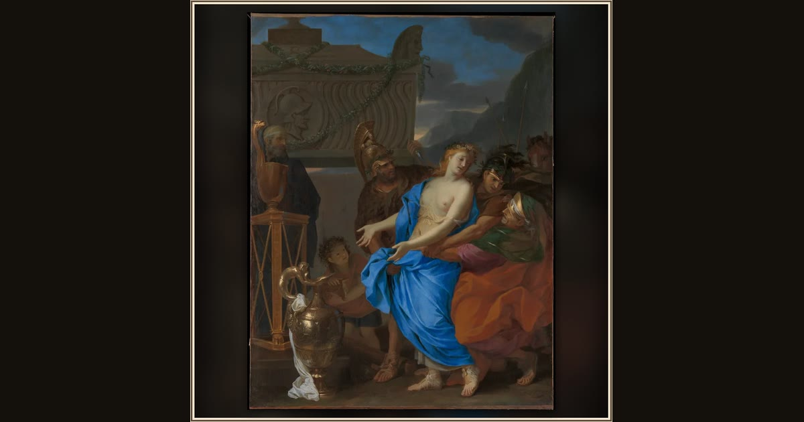

The Sacrifice of Polyxena
Charles Le Brun (French, Paris 1619–1690 Paris) · 1647 · met
Two figures restrain Polyxena beside a garlanded tomb. Talthybius recounts how she refuses to be held and offers her neck freely (545–549). Explore its place in Euripides's Plays, Hecuba, line 541.